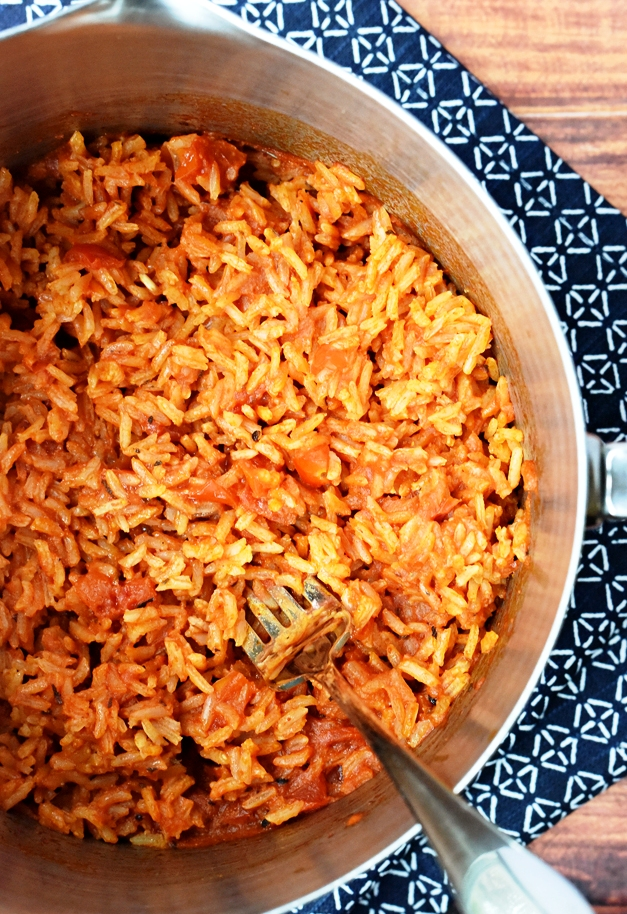

Simple and Easy Spanish Rice

Spanish Rice Recipe
An easy to make, simplified version of a typical red spanish rice.
This tasy rice recipe goes great as a side for just about any meal, and only takes about 30 minutes
from start to finish to make. Your guests will hardly know how little effort
you spent making this!
Ingredients
- 2 Tablespoons oil
- 2 Tablespoons chopped onion
- 1 1/2 Cups uncooked white rice
- 2 Cups chicken broth
- 1 Cup picante sause, or red salsa
Steps
- Heat oil in a large, heavy skillet over medium heat.
- Add onion; cook and stir until tender, about 5 minutes.
- Add rice; cook and stir until rice begins to turn golden brown.
- Stir in chicken broth and picante sauce, reduce heat, cover, and let simmer.
- Once liquid has been absorbed, about 15-20 minutes, remove from heat.
- Lightly stir and fluff rice, serve, and enjoy!